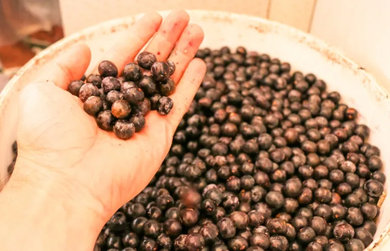
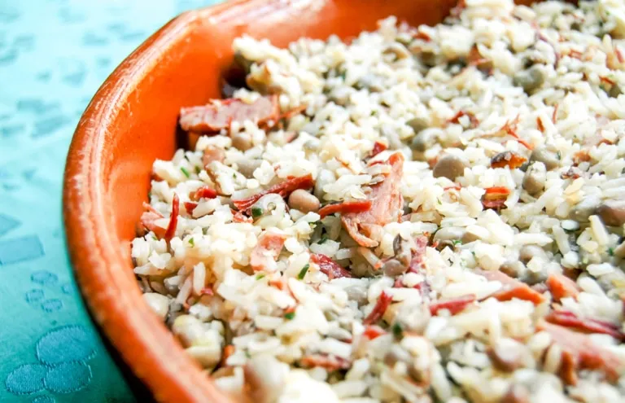
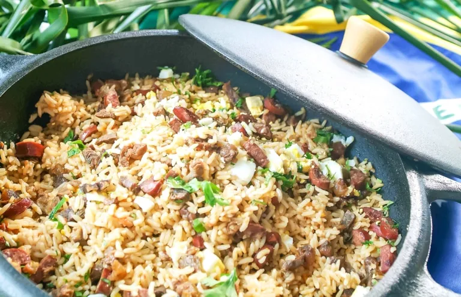

Comidas Típicas
Açaí
O açaí é o fruto de uma palmeira muito comum na região amazônica, mas foi a partir do Pará que ele ganhou o mundo. Eu digo isso porque a gente já consegue comprar açaí em vários países, como Portugal, por exemplo.
Baião de Dois
Esse é um clássico. Muito consumido em vários estados do Nordeste, o baião de dois sempre aparece nas refeições do dia a dia. É uma mistura saborosíssima de arroz com feijão-verde que ganha novos ingredientes de acordo com a região, mas a base é sempre a mesma.
Arroz Carreteiro
O arroz carreteiro surgiu nos pampas do Rio Grande do Sul. Para suportarem as longas distâncias, os gaúchos preparavam uma mistura de arroz e charque – semelhante à carne seca -, ingredientes que resistiam aos longos dias de viagem.